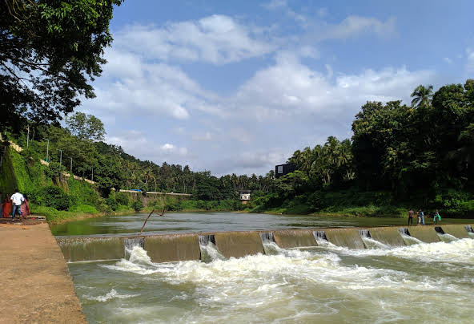

Cheruppadi Mala
Cheruppadi Mala and Mini Ooty viewpoints are two closely located picturesque sites of the Arimbra Hills.

Kottakunnu Park
Kottakkunnu park is a hill range park situated in malappuram.place is equipped with many small rides..

Chembachayam riverside
Chamakkayam Riverside Park in Malappuram is one of the top Parks in Malappuram.